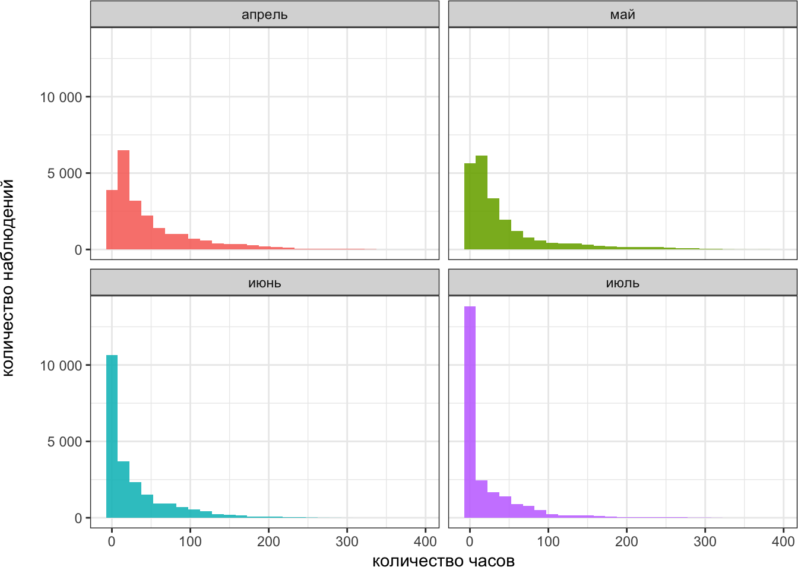
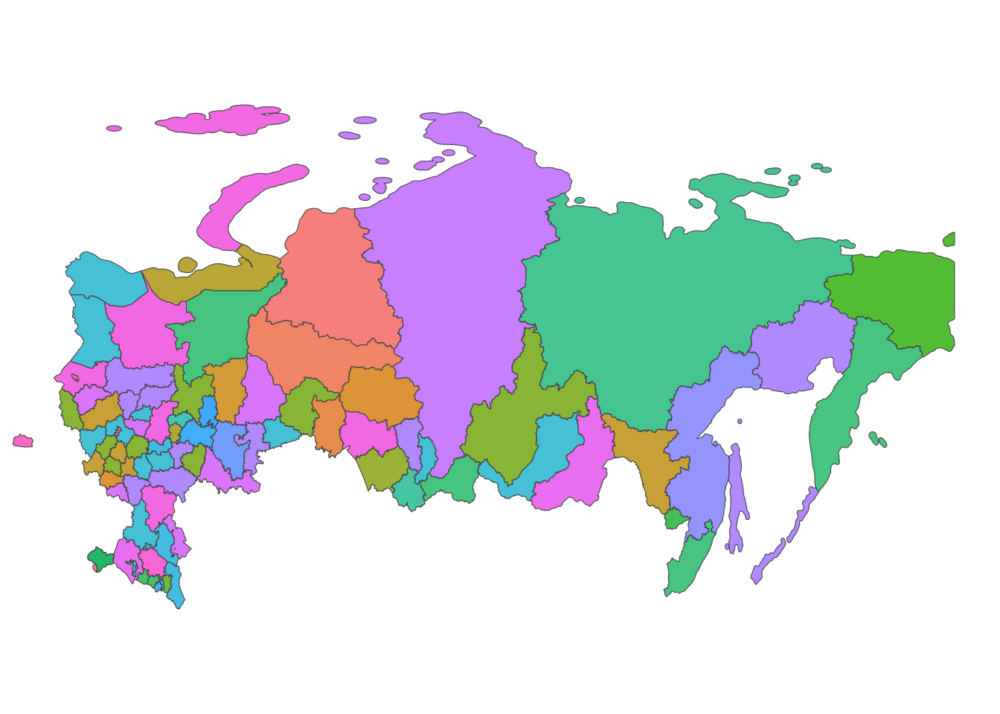
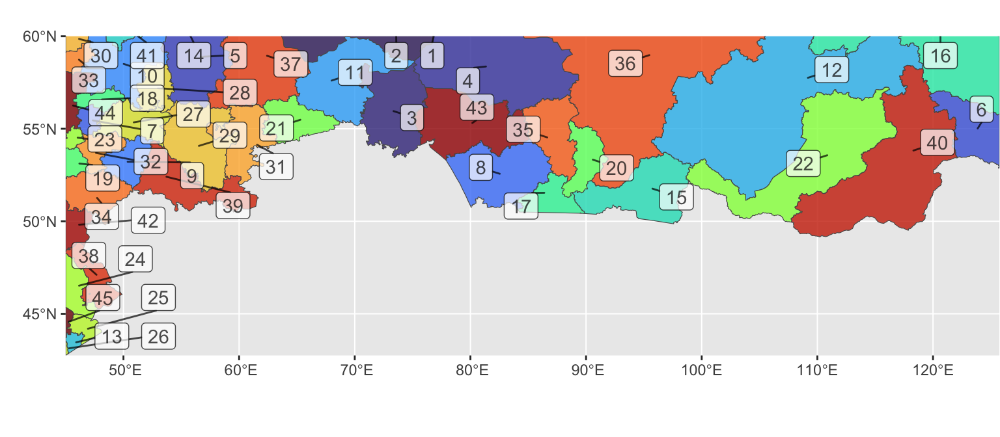
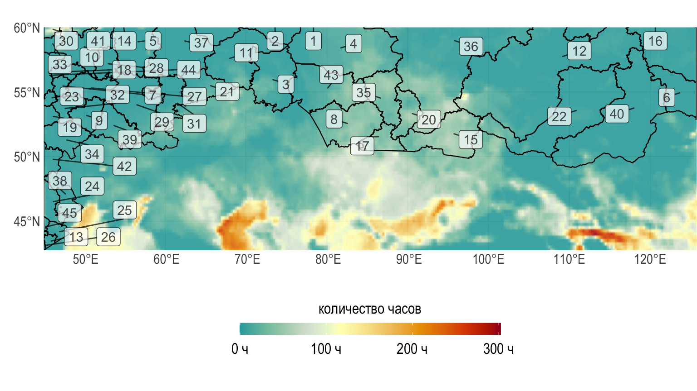
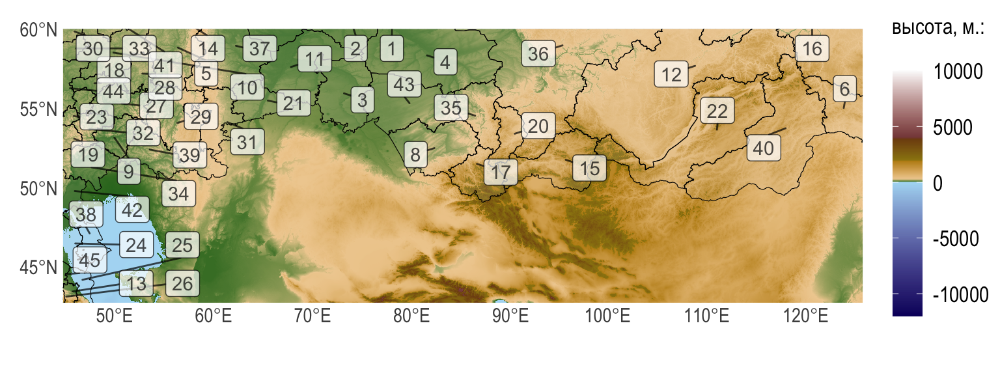

Код
# общие библиотеки
library(tidyverse)
library(magrittr)
# работа внутри директорий
library(here)
# библиотеки для работы с географическими данными
library(raster)
library(marmap)
library(elevatr)
library(sp)
library(sf)
library(terra)А.А. Автор
28 февраля 2023 г.
Данный документ создан на языке программирования R с помощью воспроизводимых вычислений и опубликован на основе издательской системы Quarto версии 1.3.228 на сервисе Netlify. При изменении исходных данных, документ автоматически будет сгенерирован с учетом изменений.
Загрузим необходимые библиотеки языка программирования R.
Загрузим табличные данные.
data_path <- here("data")
data_table_path <- here(data_path, "wind_2021.csv")
wind_2021_raw <- read_csv(data_table_path)
wind_2021 <- wind_2021_raw
# правильные типы данных
wind_2021$lon %<>% as.numeric()
wind_2021$lat %<>% as.numeric()
# месяцы как факторы (упорядочивание)
wind_2021$month <- factor(wind_2021$month,
labels = c(
"апрель",
"май",
"июнь",
"июль"
),
levels = c(
"апрель",
"май",
"июнь",
"июль"
)
)Посмотрим на структуру исходных табличных данных. Здесь:
| переменная | значение |
|---|---|
lat |
широта точки |
lon |
долгота |
wind_value |
повторяемость ветра в 2021 г. (количество часов) |
year |
год |
month |
месяц |
Данные представляют собой объединенную таблицу, в которой каждая строка соответствует одному наблюдению, а названия столбцов – переменным.1 Такие данные удобно преобразовывать и использовать в дальнейшем для графиков.
# A tibble: 90,720 × 5
lat lon wind_value year month
<dbl> <dbl> <dbl> <dbl> <fct>
1 60 45 1 2021 апрель
2 60 45.2 52.4 2021 апрель
3 60 45.5 102. 2021 апрель
4 60 45.8 153 2021 апрель
5 60 46 194. 2021 апрель
6 60 46.2 197. 2021 апрель
7 60 46.5 155. 2021 апрель
8 60 46.8 124. 2021 апрель
9 60 47 119. 2021 апрель
10 60 47.2 115. 2021 апрель
# … with 90,710 more rowsРассмотрим изменения основной величины wind_value для различных месяцев на гистограммах ниже.
wind_2021 %>%
ggplot(aes(x = wind_value, fill = month)) +
geom_histogram(alpha = 0.9, binwidth = 15) +
labs(fill = "месяц",
x = "количество часов",
y = "количество наблюдений\n") +
scale_y_continuous(labels = function(x) format(x, big.mark = " ",
scientific = FALSE)) +
theme_bw() +
facet_wrap(~month, ncol = 2) +
theme(legend.position = "none",
plot.margin = margin(0.01, 0.01, 0.01, 0.01, "cm"),
legend.title = element_text(size = rel(1.1)),
legend.text = element_text(size = rel(1.1)))
Все карты (как векторные, так и растровые) и объекты на картах строятся с учетом картографической проекции, в нашем случае это проекция EPSG:4326. Кроме того, для геометрического упрощения границ и ускорения вычислений, заранее была выполнена генерализация картографической основы.
Интересующая нас область представляет собой прямоугольник, градусные меры широт которого варьируются от 42,75 до 60 и для долготы от 45 до 125,75.
Загрузим (упрощенные границы) Российской Федерации.
Reading layer `boundary_Russia_regions_simplified' from data source
`/Users/materov/@Мои доклады/@Quarto meetups/materials/report/data/boundary_Russia_regions_simplified.shp'
using driver `ESRI Shapefile'
Simple feature collection with 86 features and 1 field
Geometry type: MULTIPOLYGON
Dimension: XY
Bounding box: xmin: -180 ymin: 41.18587 xmax: 180 ymax: 82.05862
Geodetic CRS: WGS 84Изобразим полную карту РФ по регионам.

Ограничим карту регионов только на исследуемую прямоугольную область. Здесь цвет соответствует номеру региона.
Russia_regions_crop <- st_crop(Russia_regions_boundary,
xmin = min(wind_2021$lon),
ymin = min(wind_2021$lat),
xmax = max(wind_2021$lon),
ymax = max(wind_2021$lat)
)
Russia_regions_crop <- Russia_regions_crop %>%
mutate(id = row_number())
ggplot() +
geom_sf(data = Russia_regions_crop,
aes(fill = id), alpha = 0.8) +
ggrepel::geom_label_repel(
data = Russia_regions_crop,
aes(label = id, geometry = geometry),
stat = "sf_coordinates",
min.segment.length = 0,
alpha = 0.7
) +
coord_sf(xlim = c(min(wind_2021$lon), max(wind_2021$lon)),
ylim = c(min(wind_2021$lat), max(wind_2021$lat)),
expand = FALSE) +
labs(x = "", y = "") +
theme(legend.position = "none") +
viridis::scale_fill_viridis(option = "turbo") +
theme(plot.margin = margin(0.01, 0.01, 0.01, 0.01, "cm"),
legend.title = element_text(size = rel(1.1)),
legend.text = element_text(size = rel(1.1)))
Язык R позволяет строить график послойно, настраивать прозрачность слоев, добавлять различные элементы, и т.д.
Для отображения данных можно воспользоваться растровыми картами с непрерывными палитрами. Ниже показан пример наблюдений июня 2021 года.
# функция, необходимая для переопределения
# средней точки цветовой палитры
1mid_rescaler <- function(mid = 0) {
function(x, to = c(0, 1), from = range(x, na.rm = TRUE)) {
scales::rescale_mid(x, to, from, mid)
}
}mid_rescaler – аргумент средней точки в scale_* (источник).
library(paletteer)
ggplot() +
geom_raster(data = wind_2021 %>% dplyr::filter(month == "июнь"),
aes(x = lon, y = lat, fill = wind_value),
alpha = 0.9, interpolate = TRUE) +
geom_sf(data = Russia_regions_crop, color = "black",
alpha = 0.01,
linewidth = 0.4) +
ggrepel::geom_label_repel(
data = Russia_regions_crop,
aes(label = id, geometry = geometry),
stat = "sf_coordinates",
min.segment.length = 0,
alpha = 0.7
) +
scale_fill_paletteer_c("grDevices::RdYlBu",
na.value = NA,
rescaler = mid_rescaler(mid =
median(wind_2021$wind_value) + 100),
breaks = c(0, 100, 200, 300),
labels = c("0 ч", "100 ч", "200 ч", "300 ч"),
direction = -1) +
hrbrthemes::theme_ipsum() +
labs(x = "", y = "",
fill = "количество часов") +
coord_sf(xlim = c(min(wind_2021$lon), max(wind_2021$lon)),
ylim = c(min(wind_2021$lat), max(wind_2021$lat)),
expand = FALSE) +
guides(fill = guide_colorbar(title.position = 'top',
title.hjust = 0.5,
barwidth = unit(15, 'lines'),
barheight = unit(0.7, 'lines'))) +
theme(legend.position = "bottom",
plot.margin = margin(0.01, 0.01, 0.01, 0.01, "cm"),
legend.title = element_text(size = rel(1.1)),
legend.text = element_text(size = rel(1.1))
)
Загрузим и визуализируем данные высот над уровнем моря, которые понадобятся нам для дальнейшего использования.
Из растровых данных легко сделать таблицу высот. Здесь \(x\) и \(y\) соответствуют координатам, а \(z\) – высотам над уровнем моря.
# A tibble: 4,165,928 × 3
x y z
<dbl> <dbl> <dbl>
1 45.0 61.6 160
2 45.0 61.6 167
3 45.1 61.6 173
4 45.1 61.6 172
5 45.1 61.6 161
6 45.1 61.6 147
7 45.1 61.6 138
8 45.2 61.6 143
9 45.2 61.6 155
10 45.2 61.6 161
# … with 4,165,918 more rowsПокажем растровое изображение высот над уровнем моря для исследуемой области.
ggplot() +
geom_raster(data = elevation_tibble,
aes(x = x, y = y, fill = z)) +
geom_sf(data = Russia_regions_boundary, color = "black",
alpha = 0.1) +
ggrepel::geom_label_repel(
data = Russia_regions_crop,
aes(label = id, geometry = geometry),
stat = "sf_coordinates",
min.segment.length = 0,
alpha = 0.7
) +
scale_fill_etopo() +
hrbrthemes::theme_ipsum() +
labs(fill = "высота, м.:\n", x = "", y = "") +
theme(legend.key.height = unit(1, 'cm')) +
coord_sf(xlim = c(min(wind_2021$lon), max(wind_2021$lon)),
ylim = c(min(wind_2021$lat), max(wind_2021$lat)),
expand = FALSE) +
theme(plot.margin = margin(0.01, 0.01, 0.01, 0.01, "cm"),
legend.title = element_text(size = rel(1.1)),
legend.text = element_text(size = rel(1.1)))
Здесь указана информация о сессии и загруженных библиотеках языка R.
─ Session info ───────────────────────────────────────────────────────────────
setting value
version R version 4.2.0 (2022-04-22)
os macOS Monterey 12.1
system aarch64, darwin20
ui X11
language (EN)
collate ru_RU.UTF-8
ctype ru_RU.UTF-8
tz Asia/Krasnoyarsk
date 2023-02-28
pandoc 2.18 @ /Users/materov/opt/miniconda3/envs/ox/bin/ (via rmarkdown)
─ Packages ───────────────────────────────────────────────────────────────────
package * version date (UTC) lib source
adehabitatMA 0.3.15 2022-10-21 [1] CRAN (R 4.2.0)
bit 4.0.5 2022-11-15 [1] CRAN (R 4.2.0)
bit64 4.0.5 2020-08-30 [1] CRAN (R 4.2.0)
blob 1.2.3 2022-04-10 [1] CRAN (R 4.2.0)
cachem 1.0.7 2023-02-24 [1] CRAN (R 4.2.0)
class 7.3-21 2023-01-23 [1] CRAN (R 4.2.0)
classInt 0.4-8 2022-09-29 [1] CRAN (R 4.2.0)
cli 3.6.0 2023-01-09 [1] CRAN (R 4.2.0)
codetools 0.2-19 2023-02-01 [1] CRAN (R 4.2.0)
colorspace 2.1-0 2023-01-23 [1] CRAN (R 4.2.0)
crayon 1.5.2 2022-09-29 [1] CRAN (R 4.2.0)
crul 1.3 2022-09-03 [1] CRAN (R 4.2.0)
curl 5.0.0 2023-01-12 [1] CRAN (R 4.2.0)
DBI 1.1.3 2022-06-18 [1] CRAN (R 4.2.0)
digest 0.6.31 2022-12-11 [1] CRAN (R 4.2.0)
dplyr * 1.1.0 2023-01-29 [1] CRAN (R 4.2.0)
e1071 1.7-13 2023-02-01 [1] CRAN (R 4.2.0)
elevatr * 0.4.3.9999 2022-09-22 [1] Github (jhollist/elevatr@d06d652)
ellipsis 0.3.2 2021-04-29 [1] CRAN (R 4.2.0)
evaluate 0.20 2023-01-17 [1] CRAN (R 4.2.0)
extrafont 0.19 2023-01-18 [1] CRAN (R 4.2.0)
extrafontdb 1.0 2012-06-11 [1] CRAN (R 4.2.0)
fansi 1.0.4 2023-01-22 [1] CRAN (R 4.2.0)
farver 2.1.1 2022-07-06 [1] CRAN (R 4.2.0)
fastmap 1.1.1 2023-02-24 [1] CRAN (R 4.2.0)
fontBitstreamVera 0.1.1 2017-02-01 [1] CRAN (R 4.2.0)
fontLiberation 0.1.0 2016-10-15 [1] CRAN (R 4.2.0)
fontquiver 0.2.1 2017-02-01 [1] CRAN (R 4.2.0)
forcats * 1.0.0 2023-01-29 [1] CRAN (R 4.2.0)
gdistance 1.6 2022-10-10 [1] CRAN (R 4.2.0)
gdtools 0.3.1 2023-02-17 [1] CRAN (R 4.2.0)
generics 0.1.3 2022-07-05 [1] CRAN (R 4.2.0)
gfonts 0.2.0 2023-01-08 [1] CRAN (R 4.2.0)
ggplot2 * 3.4.1 2023-02-10 [1] CRAN (R 4.2.0)
ggrepel 0.9.3 2023-02-03 [1] CRAN (R 4.2.0)
glue 1.6.2 2022-02-24 [1] CRAN (R 4.2.0)
gridExtra 2.3 2017-09-09 [1] CRAN (R 4.2.0)
gtable 0.3.1 2022-09-01 [1] CRAN (R 4.2.0)
here * 1.0.1 2020-12-13 [1] CRAN (R 4.2.0)
hms 1.1.2 2022-08-19 [1] CRAN (R 4.2.0)
hrbrthemes 0.8.0 2020-03-06 [1] CRAN (R 4.2.0)
htmltools 0.5.4 2022-12-07 [1] CRAN (R 4.2.0)
htmlwidgets 1.6.1 2023-01-07 [1] CRAN (R 4.2.0)
httpcode 0.3.0 2020-04-10 [1] CRAN (R 4.2.0)
httpuv 1.6.9 2023-02-14 [1] CRAN (R 4.2.0)
httr 1.4.5 2023-02-24 [1] CRAN (R 4.2.0)
igraph 1.4.1 2023-02-24 [1] CRAN (R 4.2.0)
jsonlite 1.8.4 2022-12-06 [1] CRAN (R 4.2.0)
KernSmooth 2.23-20 2021-05-03 [1] CRAN (R 4.2.0)
knitr 1.42 2023-01-25 [1] CRAN (R 4.2.0)
labeling 0.4.2 2020-10-20 [1] CRAN (R 4.2.0)
later 1.3.0 2021-08-18 [1] CRAN (R 4.2.0)
lattice 0.20-45 2021-09-22 [1] CRAN (R 4.2.0)
lifecycle 1.0.3 2022-10-07 [1] CRAN (R 4.2.0)
lubridate * 1.9.2 2023-02-10 [1] CRAN (R 4.2.0)
magrittr * 2.0.3 2022-03-30 [1] CRAN (R 4.2.0)
marmap * 1.0.9 2023-01-09 [1] CRAN (R 4.2.0)
Matrix 1.5-3 2022-11-11 [1] CRAN (R 4.2.0)
memoise 2.0.1 2021-11-26 [1] CRAN (R 4.2.0)
mime 0.12 2021-09-28 [1] CRAN (R 4.2.0)
munsell 0.5.0 2018-06-12 [1] CRAN (R 4.2.0)
ncdf4 1.21 2023-01-07 [1] CRAN (R 4.2.0)
paletteer * 1.5.0 2022-10-19 [1] CRAN (R 4.2.0)
pillar 1.8.1 2022-08-19 [1] CRAN (R 4.2.0)
pkgconfig 2.0.3 2019-09-22 [1] CRAN (R 4.2.0)
plyr 1.8.8 2022-11-11 [1] CRAN (R 4.2.0)
prettyunits 1.1.1 2020-01-24 [1] CRAN (R 4.2.0)
prismatic 1.1.1 2022-08-15 [1] CRAN (R 4.2.0)
progress 1.2.2 2019-05-16 [1] CRAN (R 4.2.0)
progressr 0.13.0 2023-01-10 [1] CRAN (R 4.2.0)
promises 1.2.0.1 2021-02-11 [1] CRAN (R 4.2.0)
proxy 0.4-27 2022-06-09 [1] CRAN (R 4.2.0)
purrr * 1.0.1 2023-01-10 [1] CRAN (R 4.2.0)
R6 2.5.1 2021-08-19 [1] CRAN (R 4.2.0)
raster * 3.6-14 2023-01-16 [1] CRAN (R 4.2.0)
Rcpp 1.0.10 2023-01-22 [1] CRAN (R 4.2.0)
readr * 2.1.4 2023-02-10 [1] CRAN (R 4.2.0)
rematch2 2.1.2 2020-05-01 [1] CRAN (R 4.2.0)
reshape2 1.4.4 2020-04-09 [1] CRAN (R 4.2.0)
rgdal 1.6-4 2023-01-12 [1] CRAN (R 4.2.0)
rlang 1.0.6 2022-09-24 [1] CRAN (R 4.2.0)
rmarkdown 2.20 2023-01-19 [1] CRAN (R 4.2.0)
rprojroot 2.0.3 2022-04-02 [1] CRAN (R 4.2.0)
RSQLite 2.3.0 2023-02-17 [1] CRAN (R 4.2.0)
Rttf2pt1 1.3.12 2023-01-22 [1] CRAN (R 4.2.0)
s2 1.1.2 2023-01-12 [1] CRAN (R 4.2.0)
scales 1.2.1 2022-08-20 [1] CRAN (R 4.2.0)
sessioninfo 1.2.2 2021-12-06 [1] CRAN (R 4.2.0)
sf * 1.0-9 2022-11-08 [1] CRAN (R 4.2.0)
shape 1.4.6 2021-05-19 [1] CRAN (R 4.2.0)
shiny 1.7.4 2022-12-15 [1] CRAN (R 4.2.0)
slippymath 0.3.1 2019-06-28 [1] CRAN (R 4.2.0)
sp * 1.6-0 2023-01-19 [1] CRAN (R 4.2.0)
stringi 1.7.12 2023-01-11 [1] CRAN (R 4.2.0)
stringr * 1.5.0 2022-12-02 [1] CRAN (R 4.2.0)
systemfonts 1.0.4 2022-02-11 [1] CRAN (R 4.2.0)
terra * 1.7-3 2023-01-24 [1] CRAN (R 4.2.0)
tibble * 3.1.8 2022-07-22 [1] CRAN (R 4.2.0)
tidyr * 1.3.0 2023-01-24 [1] CRAN (R 4.2.0)
tidyselect 1.2.0 2022-10-10 [1] CRAN (R 4.2.0)
tidyverse * 2.0.0 2023-02-22 [1] CRAN (R 4.2.0)
timechange 0.2.0 2023-01-11 [1] CRAN (R 4.2.0)
tzdb 0.3.0 2022-03-28 [1] CRAN (R 4.2.0)
units 0.8-1 2022-12-10 [1] CRAN (R 4.2.0)
utf8 1.2.3 2023-01-31 [1] CRAN (R 4.2.0)
vctrs 0.5.2.9000 2023-01-29 [1] Github (r-lib/vctrs@af3fcc4)
viridis 0.6.2 2021-10-13 [1] CRAN (R 4.2.0)
viridisLite 0.4.1 2022-08-22 [1] CRAN (R 4.2.0)
vroom 1.6.1 2023-01-22 [1] CRAN (R 4.2.0)
withr 2.5.0 2022-03-03 [1] CRAN (R 4.2.0)
wk 0.7.1 2022-12-09 [1] CRAN (R 4.2.0)
xfun 0.37 2023-01-31 [1] CRAN (R 4.2.0)
xtable 1.8-4 2019-04-21 [1] CRAN (R 4.2.0)
yaml 2.3.7 2023-01-23 [1] CRAN (R 4.2.0)
[1] /Library/Frameworks/R.framework/Versions/4.2-arm64/Resources/library
──────────────────────────────────────────────────────────────────────────────Желательно всегда представлять данные именно в таком виде.↩︎